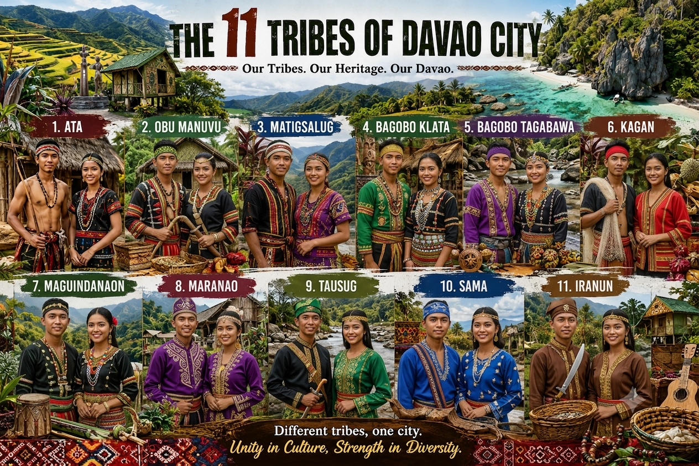

11 TRIBES OF DAVAO CITY
The Lumad tribes are the Indigenous peoples and original inhabitants of Davao City. They have preserved their unique traditions, languages, and way of life for generations. They played an important role in history by protecting their ancestral lands, passing down their culture, and contributing to Davao City's rich heritage and identity. Today, their traditions continue to be celebrated and respected, especially during the Kadayawan Festival.
Explore the map to know where the 11 Lumad Tribes live in Davao City and their traditional Clothing, dances, and beliefs.
Tribes List
- Ata
- Bagobo Klata
- Bagobo-Tagabawa
- Iranun
- Kagan
- Maguindanao
- Maranao
- Matigsalug
- Tausug
- Obo-Manuvu
- Sama
